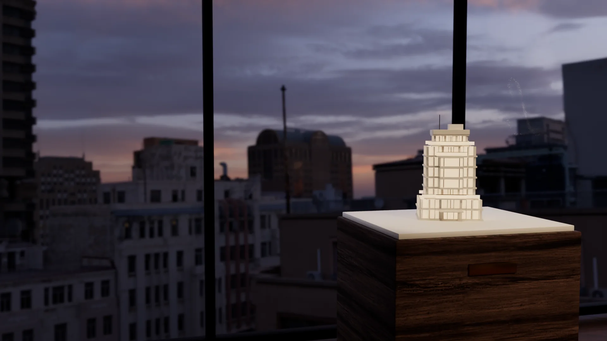
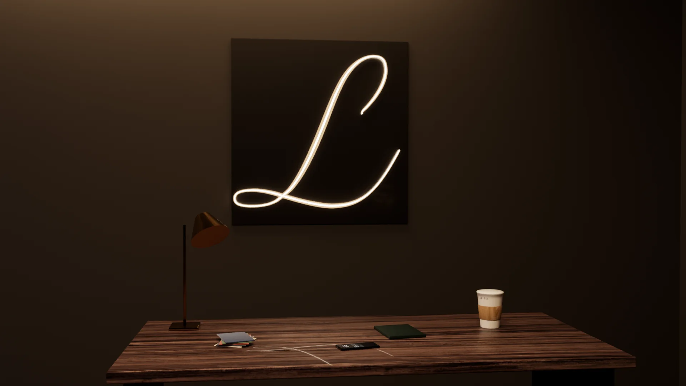
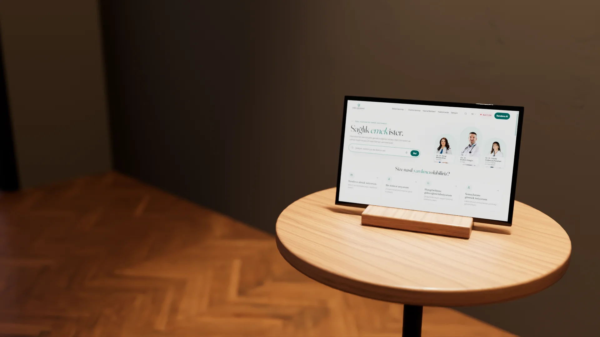

Larisel — 3D & web studio
We turn your product into a film you scroll and 3D you can turn.
Websites for cafés, furniture and interiors — films you scroll, 3D you can turn, and they open on a phone.
01 — Café
Larisel Café. A café you order from.
This chapter is the café's own film, playing from its own site: the coffee is poured, the lid goes on, and the cup becomes the live one below.
01 — Café
Larisel Café
Pick a coffee, design the cup.
A café website that guests use the way they use the counter — and then a little more.
- Design the cupChoose the drink, then the cup's colour, sleeve and lid — and see your name printed on it.
- Order from the tableScan the code on the table, order, and split the bill with friends.
- A coffee readingSend a photo of the empty cup and read what the grounds say.
On the siteA guest designs a cup: ink blue, a copper sleeve, and her name.

02 — Furniture
Larisel Furniture. Built on screen.
A furniture shop's page where the customer designs the sofa, the armchair or the coffee table — and sees it before it is made.
Fabric and frame
One tap, a different chair.
Sand to graphite to terracotta, oak to brass to walnut. On the shop's page the chair changes the moment the customer chooses.
02 — Furniture
Larisel Furniture
Two seats, three, or a corner with a chaise — in bouclé, velvet or linen, on the legs you choose.
A furniture page that sells by letting the customer design the sofa, the armchair or the coffee table themselves.
- Pick the piece and its shapeAn armchair in two sizes; a sofa with two seats, three, or a chaise; a round, oval or long coffee table.
- Pick the materialsBouclé, velvet or linen in eight tones each; marble, travertine or solid wood for the table — seen up close before choosing, with ready pairings that set it all in one tap.
- A whole shop around itDimensions drawn on the piece and two designs side by side — then a cart, a checkout with delivery and instalments, order tracking and a material library.
On the siteThe customer turns the sofa, tries ready pairings, then a cloth and a tone of their own — the sofa and its price change with every tap.

03 — Interiors
Larisel Interiors. The client chooses the room.
A tool for kitchen and interior studios: floor, worktop, fronts and wall colour, changed live while the client stands in the room.
Afternoon to evening
The same kitchen, after sunset.
One switch shows the materials under evening light — before a single panel is ordered.
03 — Interiors
Larisel Interiors
Let the client choose the room.
Instead of sending renders back and forth, the studio sends one link — and the client arrives at the meeting having decided.
- Try the materialsSix floors, six worktops, eight cabinet fronts and eight wall colours.
- See it day and nightThe same kitchen in daylight and with the lamps on.
- Open it anywhereIt runs in the browser, on a phone too; nothing to install.
On the siteThe client tries a walnut floor, a Calacatta worktop and ink-blue fronts — then switches to evening.

04 — Corporate site
Larisel Group. Three sectors, one address.
The website of a group working in retail, construction and energy — one set of pages, three languages.
04 — Corporate site
Larisel Group
Retail. Construction. Energy. One group.
One website for a group of three companies — clear to a customer, an investor and a job seeker alike.
- A page for each companyLarisel Park, Larisel İnşaat and Larisel Enerji, each with its own story and colour.
- Three languagesTurkish, English and Russian from a single set of pages.
- The building, in 3DThe construction page shows the group's project as a model you can turn.
On the siteScrolling the group's homepage: the relief behind the type, the flagship project, the sectors.

05 — Order bot
An order arrives the moment it is placed.
The shop's Telegram bot takes the order, checks every step and sends it to the workshop — the phone on the desk is where it lands.
05 — Order bot
Larisel Order Bot
Choose, confirm, done — inside Telegram.
A Telegram bot that carries a catalogue, a cart and a five-step checkout, with an admin panel and an Excel export behind it.
- Order in a chatNo app to install: the customer orders where they already talk.
- Nothing gets lostEvery step is checked and saved; an order is never half-taken.
- The shop sees it allAn admin panel for the day's orders, and Excel when the accountant asks.
Tap the answers — this is the bot's real flow, played here. Nothing is sent.

06 — Hospital
A patient finds the right doctor.
A private hospital's website: say where it hurts, find the doctor, ask for an appointment — in a minute.
06 — Hospital
Emek Hospital
Health takes effort.
A client's website: a private hospital where a patient finds the right doctor and asks for an appointment in a minute.
- Say where it hurtsOne box for a complaint, a department or a doctor's name — it answers as you type.
- Ask for an appointmentDepartment, doctor, day: the request reaches the call centre, which calls back to confirm.
- Run by the hospitalA panel of its own: the staff see the requests and keep the doctors and pages up to date.
On the siteA complaint typed into the search — it finds the department and the doctor — then the departments, the doctors and the hospital in numbers.
07 — Snack brand
Kıtlax. Out of the die, into the oil.
A macaroni-crisp brand's website. Its film follows the snack from durum wheat to its seasoning — it plays as you scroll.
Golden in the oil
Heat puffs it up, the seasoning finishes it.
Four flavours in four shapes — each with a page of its own on the site.
07 — Snack brand
Kıtlax
Pasta at its crispiest.
A client's website: a macaroni-crisp maker that shows how its snack is made — and sells it by the case.
- Watch it being madeWheat, the mill, the bronze die, the fryer, the seasoning and the bag — one film that plays as you scroll.
- Open a flavourFour flavours in four shapes, each with a page of its own and the product's details.
- Become a representativeA message to the company, with the cases per flavour added if the visitor likes.
On the siteThe four flavours, each opening a page of its own, and the koala dressed in each one's colour.
Projects
Every project we have built, in one place.→Contact us
Let's talk about your site.
Pick what you need — your message is written for you. Send it by e-mail, WhatsApp or Telegram, and we will get back to you.
Your project
0/ 5
Your brief, in a few taps.
What do you need? Several can be chosen
For what kind of business?
Languages
When?
Budget
Your brief
Choose what you need first — the rest can follow.
Copied — paste it into the chat.
We answer within a day — with a price.